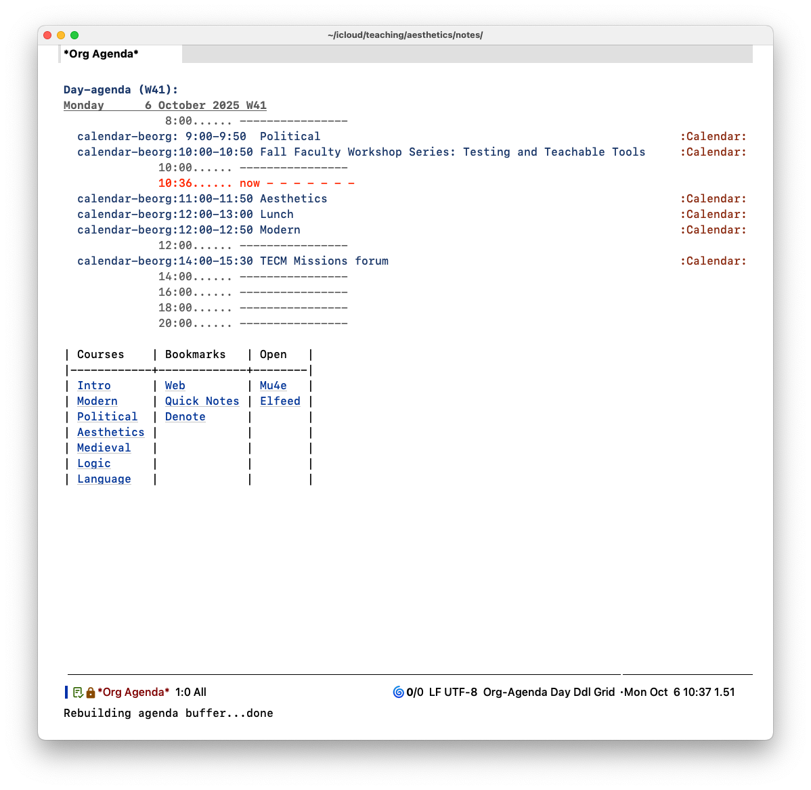

A Simple Emacs Dashboard
(October 22, 2025)
Emacs Dashboard is an elegant start page for Emacs that displays projects, recent files, agenda items, etc. It’s very customizable, but not quite in the way that I would like. I do like having a dashboard as my starting page, but I want something that displays the usual agenda view, not just a list of events. This is mainly because I like having a visual representation of the relation between the current time and my next appointment. I first define a function that opens the agenda for today and deletes other windows in the frame. This is assigned to s-d to quickly clear the screen of anything displayed and show the agenda. To display it without deleting other windows, just use the standard C-c a d
(defun agenda-home ()
(interactive)
(org-agenda-list 1)
(delete-other-windows))
Then, I make sure that new frames displayed this when created.
(add-hook 'server-after-make-frame-hook #'agenda-home)
This function refreshes the agenda. It’s run every minute. That’s really overkill, but 34 years in the Army made me anal about accurate times.
(defun refresh-agenda-periodic-function ()
"Recompute the Org Agenda buffer(s) periodically."
(ignore-errors
(when (get-buffer "*Org Agenda*")
(with-selected-window (get-buffer-window "*Org Agenda*")
(org-agenda-redo-all)))))
;; Refresh agenda every minute.
(run-with-timer 60 60 'refresh-agenda-periodic-function)
The line used to designate the current time is a bit too long by default. I didn’t like how it wrapped when narrowing the window.
(setq org-agenda-current-time-string "now - - - - - - -")
Then change the color to something more noticeable.
(custom-set-faces
'(org-agenda-current-time ((t (:foreground "red")))))
Now, to make the dashboard links. For that, I use an org file that just contains a table. Each cell contains a link to a directory, file, runs some Elisp, etc. After inserting the file contents, then activate all of the links, that is, make them “clickable.”
(defun rlr/agenda-links ()
(end-of-buffer)
(insert-file-contents "/Path to Org Directory/agenda-links.org")
(while (org-activate-links (point-max))
(goto-char (match-end 0)))
(beginning-of-buffer))
(add-hook 'org-agenda-finalize-hook #'rlr/agenda-links)
I don’t like using the mouse, so make sure that pressing enter will work when the point is on the link.
(setq org-return-follows-link t)
This avoids having to confirm that the links that run Elisp are safe. I name them all with my initials to make it easy.
(setopt org-link-elisp-skip-confirm-regexp "rlr.*")
The result is this:

Tagged: Emacs